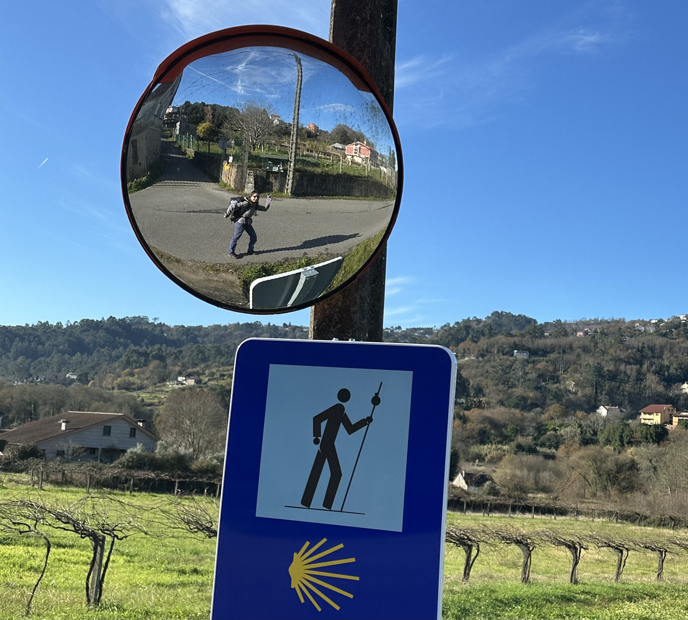
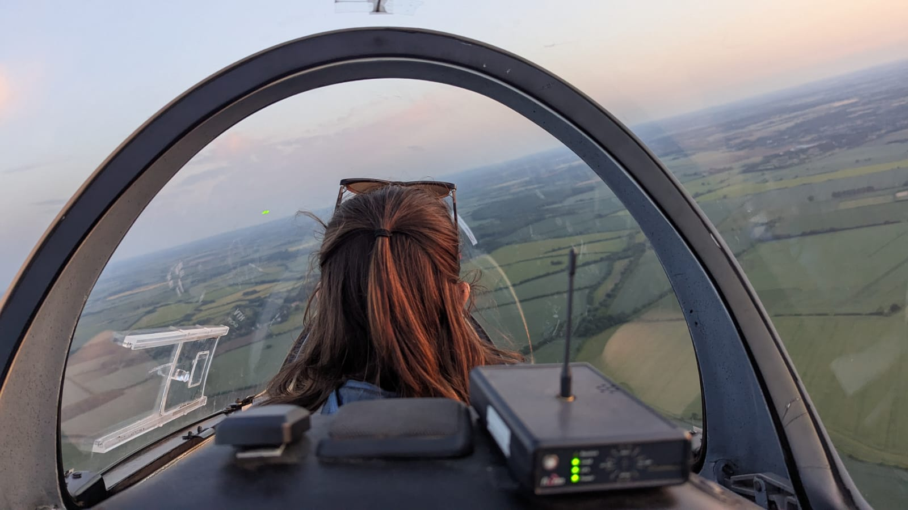
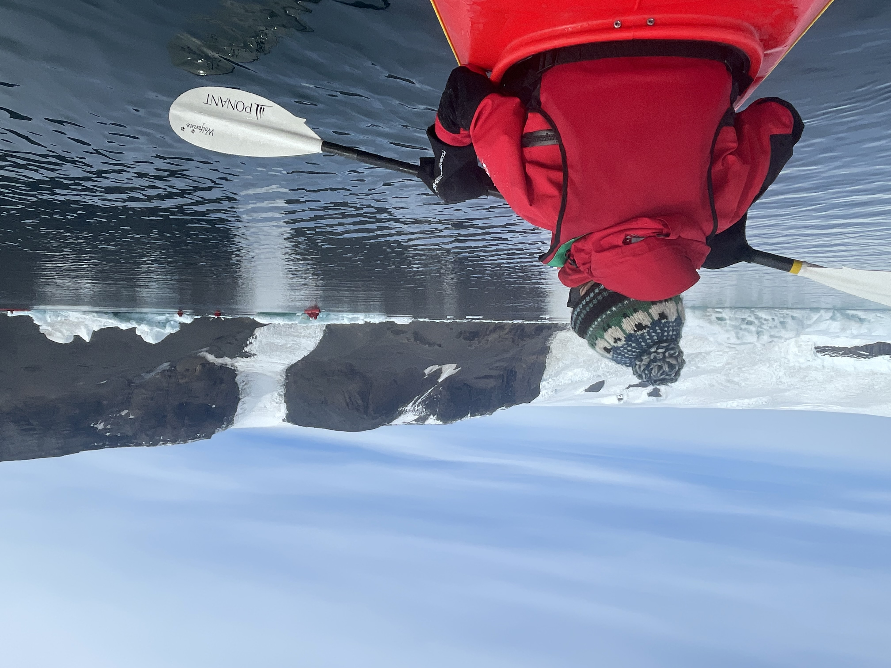

Tereza Constantinou
Abstract
I am a 4th year PhD student at the Institute of Astronomy, University of Cambridge, supervised by Prof. Oliver Shorttle and Dr Paul B. Rimmer, and funded by STFC. I research planetary science and astrobiology.
I grew up in Nicosia, Cyprus. After high school, I moved to the UK where I studied Physical Natural Sciences (BA/MA) and Astrophysics (MSc) at Trinity College, University of Cambridge. I then took 2 years off before my PhD: partly working remotely (ML Lead in a startup; for more info see my LinkedIn), and partly travelling (wherever covid allowed; for more info see non-research or ask!)
Introduction
My doctoral research is focused on a central challenge in astrobiology: to find life, one must first be able to define lifelessness. I studied the planetary atmosphere, volcanism, and weathering of Venus to deconstruct the fundamental processes of an abiotic world. This work culminated in a framework for how to search for life, and its absence, beyond our solar system.
Publications
First Detection of Deuterium in Venus's Extended Exosphere
The rainout of formaldehyde favors a formose-based origin of life in shallow ponds
Powerful Lightning On Venus Constrained By Atmospheric NO
Prediction of sulphate hazes in the lower Venus atmosphere
Did Venus ever have oceans?
Scrivener-Wiley, forthcoming chapter
Abiotic Ozone in the Observable Atmospheres of Venus and Venus-like Exoplanets
A dry Venusian interior constrained by atmospheric chemistry
Read about it in the Guardian, or hear me talk about it on BBC World Service Science In Action (among >750 pieces of media coverage worldwide).
Large Interferometer For Exoplanets (LIFE). XIV. Finding terrestrial protoplanets in the galactic neighborhood
Hydroxide Salts in the Clouds of Venus: Their Effect on the Sulfur Cycle and Cloud Droplet pH
Photochemistry of Venus-like Planets Orbiting K- and M-dwarf Stars
Talks and Posters
- Invited seminar. "Defining lifeless worlds with Venus."
- Invited seminar. "Defining lifeless worlds with Venus."
- Shortlisted talk. "Was Venus Ever Habitable?"
- Co-hosted seminar. "Habitability of Icy Moons."
- Talk. "Comparative Biosignatures."
- Invited talk. "Was Venus Ever Habitable?"
- Invited poster. "Comparative Biosignatures"; co-organiser of breakout session.
- Organised. LCLU Annual Science Day.
- Invited seminar. "Link Between Geochemistry and Atmospheres."
- Talk. "Was Venus Ever Habitable?"
- Talk. "Was Venus Ever Habitable?"
- Invited poster. "Was Venus Ever Habitable?"
- Talk. "Was Venus Ever Habitable?"
- Talk. "Was Venus Ever Habitable?"
- Invited talk. "Venus as Candidate for Constraining Volcanism and Surface Conditions."
Acknowledgements
Planetary Chemistry: We study the evolution and habitability of planets in the solar system and around other stars.
Planetary Astrochemistry Lab: We experimentally simulate planetary environments and use them to test prebiotic chemistry.
Leverhulme Centre for Life in the Universe: We aim to develop a deeper understanding of life, its emergence, and its distribution in the Universe.
Supplementary: Non-research
I favour the micro-adventure: cycling day-trips around Cambridge, weekends away scrambling with friends, bouldering, waking early for a long walk toward a light-roast coffee and a pastry, inching closer to a solo gliding license when the skies permit.
Sometimes the itch gets the better of me and I go further. A stretch of solo travel. Bikepacking!! Currently planning a ~6 month trip post-PhD, leaving Cambridge and cycling east.

a. Walking the Camino Portugués Central

b. Bikepacking round the Cairngorms

c. Gliding over Cambridgeshire
(also see CUGC expedition here)
(also see CUGC expedition here)

d. Kayaking in Antarctica